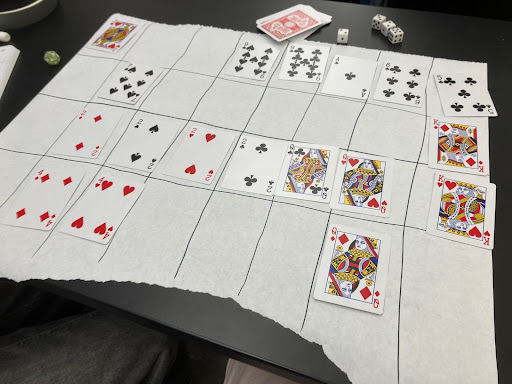
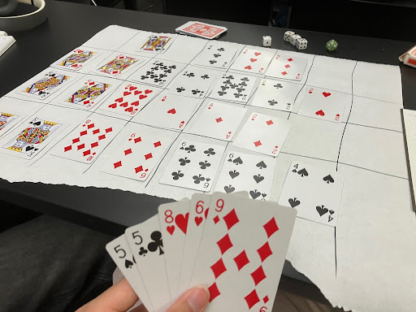
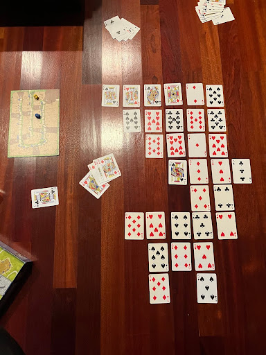
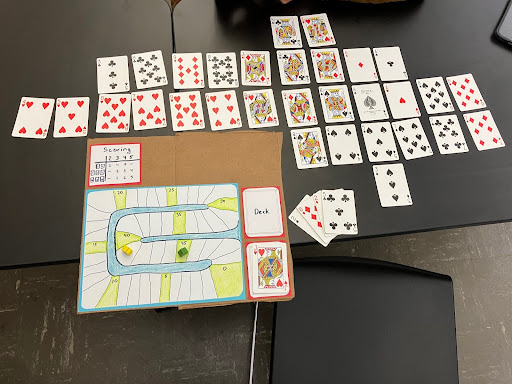

For the past week, I’ve been working on a board game called Cardtographer. It’s an abstract game in which players take turns playing cards in an expanding grid of cards, and score points by completing patterns.
One of the great things about Cardtographer is that it can be played anywhere with a flat surface; all you need is a deck of cards and a way to keep track of the score. It’s also a game that heavily uses the Tile Placement mechanic, which can be hard to find in other card games. It’s currently made for 2 players, but could probably be expanded in the future.
To set up the game, shuffle the deck of cards. Put 12 cards aside; these will not be used in play. Then, deal 5 cards to each player. Then, draw 2 more cards. Place one face-up next to the deck as a shared card, and place the other somewhere on the flat surface (leave space for more cards to be played around it). Then, the game may begin.
During the game, players take turns placing a card orthogonally adjacent to a card on the map, and score points based on the patterns that their placed card completes. Players may play a card either from their hand or the shared face-up card, drawing to replace the card at the end of the turn. Cards must be placed orthogonally adjacent to an existing card in the map (it has to attach to one of the current cards somehow). The game ends one turn after the deck runs out of cards, and the player with the most points wins.
Patterns are defined as contiguous, linear patterns that include the played card. They can be horizontal, vertical, or diagonal. All patterns completed by the played card are scored. The three types of patterns are X-of-a-kind, straight, and flush.
X-of-a-kind patterns are lines with 2 or more cards of the same numeric value. 2-of-a-kind scores 2 points, 3-of-a-kind scores 4 points, and 4-of-a-kind scores 7 points.
Straight and Flush patterns consist of at least 3 cards of consecutive numeric values or the same suit, respectively. Straights score the number of cards in the pattern minus 1, and flushes score the number of cards in the pattern minus 2.
More detailed rules can be found here.
In the first play session, a classmate and I created the rules of the game and tested it. The game we originally had was one where you would win by getting 4 of a suit or 4 of a kind in a row, much like playing Connect 4. Players could place cards freely on a 8 by 4 grid, and there were certain bonus actions that players took after completing patterns. Completing a 2-of-a-kind (a “double”) allowed the player to take another turn, and completing a 3-of-a-kind (a “triple”) allowed the player to put any card from the board into their hand. Completing a straight flush of 3 or more cards allowed the player to instead view the opponent’s whole hand and swap a card between their hands.


Some session 1 gameplay. The first image features a win with a 4-of-a-kind (the 2s), and the second features a win with the 4 clubs in the center after some comboing.
This game was pretty fun and was strategically interesting, as positioning of the cards matters and there were difficult decisions to make to ensure the opponent didn’t have a chance to win. However, we found that the gameplay would often lead to a lot of dead moves at the start as both players tried to defend, and then once the board was set up, one player could combo a bunch of doubles within a turn in order to form a row of 4 and win. There was a “redemption” mechanic which did alleviate this a little bit, where if a player won by getting 4 cards of the same suit, their opponent could take a turn in order to try and get an instant win (4-of-a-kind) or by removing one of the cards in the row of 4 suited cards.
However, I found myself dissatisfied at the non-interactiveness of the game, and decided to make some changes before the next session. I wanted to add interaction and counterplay between the two players, so I decided on a format inspired by Eurogames, which involved multiple turns and victory via point collection instead. I also added a “shared card,” a publicly-known card that either player could play during their turn instead of a card from their hand, in order to give players some idea of what their opponent could do.
After a while, I finally came up with the rules that are in the current game, particularly with the pattern system. I decided that with the flexibility of scoring patterns (patterns count in all directions), there should be some other limitations on the placement of cards. I went with the amorphous structure that you see in games like Carcassonne, which restricts placement to the spots directly adjacent to other tiles. I was ready to go to Session 2.
I had a second play session with my sibling, who happens to be a little bit of a nerd like I am. We tried both the older and newer versions of the game. We ended up having a great game with the new rules, which we both thought was a simpler and more interactive game. There were so many interesting setup and overlap plays that reminded me of what you might see in Scrabble, especially in the bottom half of the board (in the image below).

The board state after the game. There were many plays that completed multiple patterns, such as the 7 of hearts completing two straights or the 3 of clubs completing both a 3-of-a-kind and a diagonal straight.
As a result, I decided not to make any changes to the game before the third session; I wanted to see how the game would hold up given more playtesting.
My third play session was in class again, with a different classmate. He was inexperienced with playing cards, which he mentioned as a barrier to understanding the rules. He still won. (Am I just a sore loser, wanting to change the game after losing?)

The aftermath of the third game. Note the very long straight and flush extending to the left. The scoring board was moved into the gap afterwards for the photo.
This game really exposed some of the flaws with the current gameplay. For one, most of our point generation was from scoring 2- or 3-of-a-kind plays, which feels pretty luck-based and kind of boring. Another issue that I realized is… when a straight or a flush grows in length, there is no point in doing anything else that’s not just extending it. Both players should continue to extend it until they run out of the means, as it yields more points than spending time going for creative setups completing 2 small patterns.
Moving forward, I would like to rebalance the scoring system so that players are incentivized to play for more patterns (wider) rather than just larger patterns (taller). It just personally seems more interesting to me. One way that this might be done is to increase the proportion of points that come from just completing a pattern versus scaling up the size of the pattern. If a 3 card flush were worth 4 points, an increase of 1 point for a 4 card flush would relatively be worth much less than the current state with a 3 card flush being worth 1 point. Players would be more incentivized to complete more patterns rather than larger patterns.
Another idea that came up that’s definitely worth testing is to allow players to play multiple cards in a turn, like in Scrabble, rather than the Carcassonne-like single card per turn. The game lacks the meeple placement system that makes the Carcassonne single-tile placement more strategic, which may make that the better option. I’m also not entirely sure about the shared card—maybe it should have more cards, or not exist at all; variations on that are also worth testing for sure.
Overall, though, I am happy with the game and think it has a lot of potential. It’s a quick game that basically only requires a deck of cards, and allows players to compete with their pattern recognition and planning skills. I think with some more iteration, this could definitely be a game that I would even play myself on vacations or the like. Soon, I hope Cardtographer can be a game that you can enjoy as well!